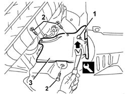

7055B66 Engine compartment DUST SHIELD protection in right front wheel arch - R.R.
- Path
- Procedures > 70 FITTINGS > 7055 MOULDING AND PROTECTION > 7055B exterior protections > 7055B66 Engine compartment DUST SHIELD protection in right front wheel arch - R.R.
- Kind
- repair procedure (removal / refitting; the operation number is the code)
- Applies to
- all engines; all production periods
- Interactive page
- https://sloeber94.github.io/elrnDB-a147/en/#/3025918
Applies to: all engines; all production periods
 Removing
Removing
 Refitting
RefittingLift the vehicle in the specific area.
1. Undo the retaining buttons using the special tool.
 | Name | Country |
|---|---|---|
1 | Scraper blade | 1.823.015.000 |
2. Unscrew the protection retaining bolts.
3. Remove the protection.

Applies to: all engines; all production periods
Refitting
RemovingCheck that the protection is not damaged.
Position the protection and tighten the bolts.
Do up the retaining stud.
Lower the vehicle.
Topics that link to this page (10)
- 1008A46 cam shaft left rigid mount - r r
- 1080E20 active carbon filter for fuel vapours - r + r
- 3340B56 RIGID PIPE from hydraulic CONTROL UNIT to RIGHT FRONT BRAKE - R.R.
- 4130A10 power steering box - r+r - check tow-in if necessary separately - includes bleeding
- 4410D13 front suspension beam - r r
- 4410D15 front suspension beam complete with wishbones and stabiliser bar r r
- 5040A20 air conditioner compressor - r+r - includes fluid level check and top up if necessary
- 5040A25 compressor bracket - r r
- 7055B64 Engine compartment DUST shield in front wheel arch (one), left or right - R.R.
- 7055B91 Right front WHEEL ARCH LINER - R.R.